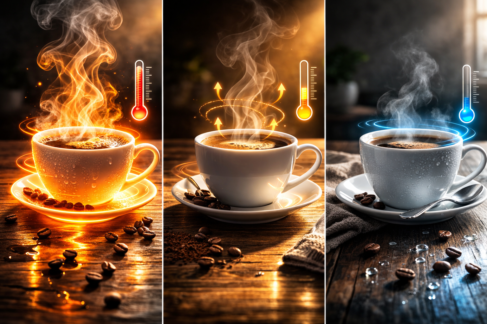
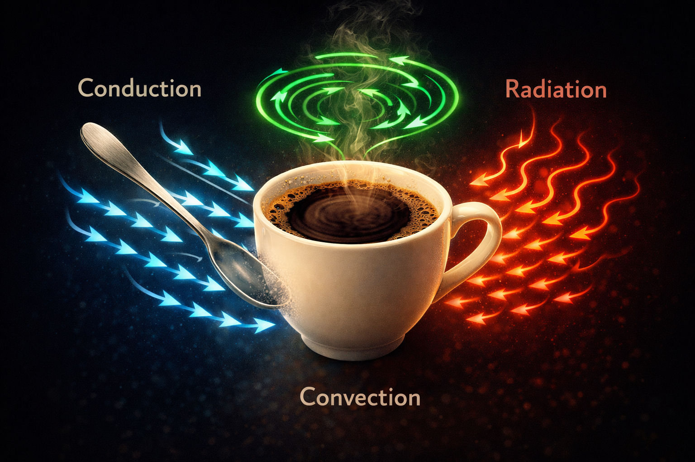
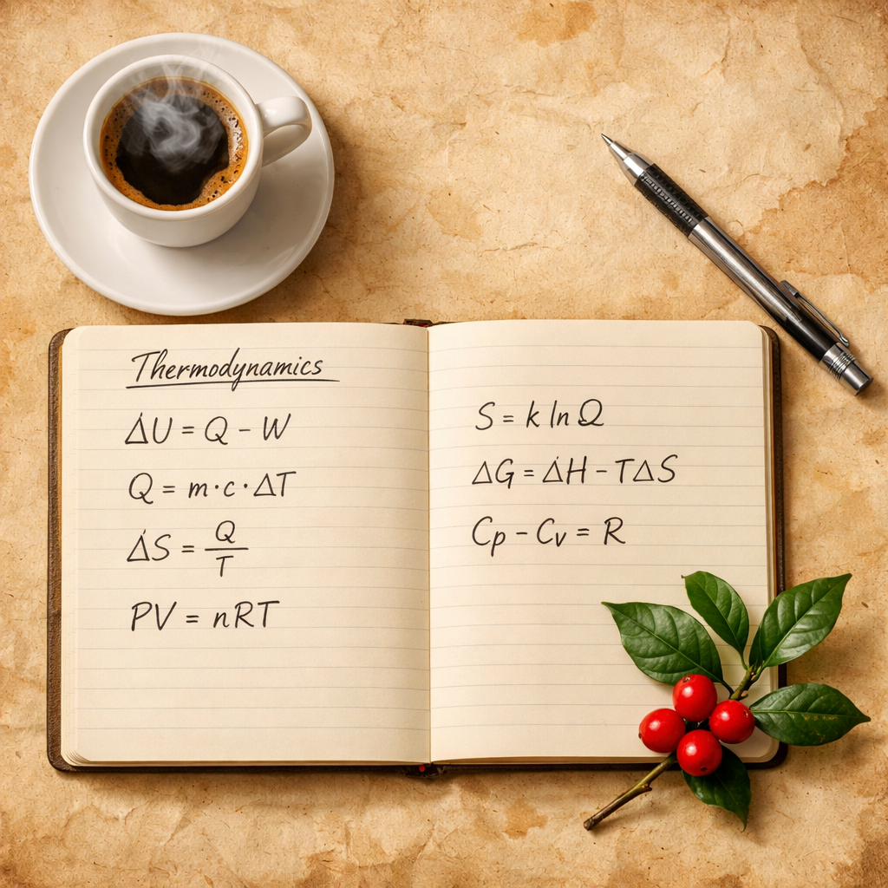

☕ Física en la sala de docentes · Calor & Termodinámica
Tres tazas, tres métodos, una física
Tres profesores, tres formas de preparar café y la termodinámica entera esperando en cada taza. Sin tablero, sin diapositivas.
H
Prof. Hayzar · Física & Ciencias Naturales
medium.com · github.com/fisicohayzar
SIGUE LEYENDO
Métodos de preparación de café.
Era martes. Sala de profesores. 6:15 p.m. Rodrigo llegó primero, puso agua a calentar y sacó su prensa francesa y un paquete de café de origen colombiano. Marcela entró después con su cafetera italiana bajo el brazo —la misma que lleva cinco años viajando en su maletín de docente. Tomás cerró la puerta, acomodó su V60 sobre la mesa y conectó su balanza de precisión con la parsimonia de quien calibra un interferómetro. Nadie lo planeó. Pero lo que siguió fue, probablemente, la mejor clase de termodinámica del semestre.
R
Rodrigo — divulgador e historiador de la física
¿Saben qué tienen en común estos tres aparatos? Todos desafían la misma pregunta que torturó a los físicos durante doscientos años: ¿qué es exactamente el calor?
T
Tomás — docente de laboratorio
*midiendo el agua en la balanza* Lo que yo sé es que si el agua no está a 93°C, el café no extrae bien. El resto es literatura.
M
Marcela — investigadora en didáctica de la física
Los dos tienen razón. La pregunta filosófica y la medida experimental son la misma cosa vista desde lados distintos. Eso es precisamente lo que no le enseñamos bien a los estudiantes.
☕
Acto I: El fantasma del calórico y la prensa francesa
La prensa francesa.
Rodrigo vertió agua a 94°C sobre el café molido grueso. Cuatro minutos de infusión. Mientras esperaba con la disciplina de un físico experimental, atacó con historia:
R
Rodrigo
Durante casi cien años, los físicos creyeron que el calor era una sustancia. La llamaban calórico: un fluido invisible, sin masa, que fluía de los cuerpos calientes a los fríos. Lavoisier —el mismo de la conservación de la masa— la incluyó en su tabla de elementos en 1789.
T
Tomás
¿Lavoisier? ¿El de la Revolución Francesa y la guillotina?
R
Rodrigo
El mismo. Y la ironía es que el calórico sobrevivió a su creador. Hasta que alguien taladró un cañón y arruinó la teoría para siempre.
📜 Dato histórico
1798
El Conde Rumford y el taladro que mató al calórico. Benjamin Thompson, Conde Rumford, supervisaba la fabricación de cañones en Múnich cuando notó algo perturbador: la fricción del taladro producía calor de forma aparentemente inagotable. Si el calórico fuera una sustancia finita contenida en el metal, eventualmente se agotaría. Pero no se agotaba. Su conclusión fue inevitable: el calor no es una sustancia. Es movimiento. Medio siglo después, James Prescott Joule lo confirmaría con experimentos de palas girando en agua.
El Conde Rumford y el calórico.
Rodrigo bajó el émbolo de la prensa francesa con parsimonia. El café —ahora completamente infusionado— resistía suavemente la presión. Sirvió la primera taza.
R
Rodrigo
Lo que acaba de ocurrir aquí es transferencia de calor por conducción y convección. El agua caliente cedió energía al café molido. No un fluido misterioso: energía cinética molecular pasando de las moléculas más agitadas del agua a las moléculas del café.
M
Marcela
Y ahí está el primer gran error conceptual de los estudiantes: confunden calor con temperatura. El agua tiene una temperatura de 94°C. Lo que le transfiere al café es calor. No son lo mismo.
🌡️ Calor vs. Temperatura — La distinción fundamental
Q = m · c · ΔT
Temperatura (T): medida del estado de agitación promedio de las partículas. Propiedad del sistema. Se mide en K, °C o °F. Calor (Q): energía en tránsito entre sistemas a diferente temperatura. No "está" en un cuerpo: fluye entre ellos.
m: masa [kg] | c: calor específico [J/(kg·°C)] | ΔT: variación de temperatura [°C]
💡 Para recordar: Preguntar "¿cuánto calor tiene el café?" es físicamente incorrecto. El café tiene temperatura. El calor es lo que se transfiere cuando lo tocas. El calor es el proceso, no el estado. Como la corriente eléctrica: no "está" en el cable, fluye a través de él.
☕
Acto II: La cafetera italiana y las leyes que obedecen los gases
Cafetera italiana.
Marcela encendió su quemador de alcohol con la serenidad de quien ha repetido ese gesto mil veces. La moka —diseñada por Alfonso Bialetti en 1933— empezó a calentarse mientras ella señalaba su depósito inferior con el dedo índice.
M
Marcela
Este depósito es un sistema termodinámico cerrado. El agua ocupa un volumen fijo. Al calentarse, la temperatura sube. ¿Qué le pasa a la presión?
T
Tomás
Sube. Gay-Lussac. Si el volumen es constante, P y T son proporcionales. Lo veo en el manómetro del laboratorio todo el tiempo.
M
Marcela
Exactamente. Y cuando la presión supera la resistencia del café compactado en el filtro, el agua asciende. Esta cafetera es un laboratorio completo de leyes de gases en 200 mililitros.
R
Rodrigo
*con admiración genuina* Gay-Lussac también fue el primero en subir en globo aerostático con fines científicos. En 1804 llegó a 7.016 metros para medir temperatura y composición del aire. La misma ley que sube el café, sube los globos.
Relación entre la presión y la Temperatura: experimento de Gay-Lussac.
⚗️ Las tres leyes de los gases en contexto
🔬 La ecuación que unifica todo
P · V = n · R · T
Ley del Gas Ideal: P = presión [Pa] | V = volumen [m³] | n = moles de gas | R = 8.314 J/(mol·K) | T = temperatura [siempre en Kelvin: K = °C + 273] ⚠ Siempre Kelvin: a 0 K el movimiento molecular cesa y la presión sería cero. A 0°C = 273 K, el gas todavía tiene presión y volumen.
La moka emitió su característico borboteo —ese sonido que cualquier italiano reconoce desde la infancia y que Marcela describe como "la Ley de Gay-Lussac cantando". El café comenzó a ascender hacia la cámara superior. Tomás, fiel a sí mismo, sacó el termómetro.
T
Tomás
Si el agua empieza a 20°C y la presión inicial es 1 atm, ¿a qué temperatura ocurre la extracción si la presión llega a 1.5 atm?
M
Marcela
Gay-Lussac: P₁/T₁ = P₂/T₂. Entonces T₂ = T₁ × P₂/P₁ = 293 K × 1.5 = 439.5 K = 166.5°C. Pero el agua ya está en vapor a esa temperatura a presión normal, así que lo que sube a través del café está cerca de 120–130°C. Por eso el café de la moka es más intenso.
R
Rodrigo
*asintiendo* Termodinámica aplicada con criterio artístico. Bialetti no estudió física, pero su cafetera es un experimento de termodinámica perfecto.
☕ Dato curioso de la moka
La cafetera italiana lleva el nombre de la ciudad yemení de Mokha, histórico puerto exportador de café desde el siglo XV. El mismo origen de la palabra "mocha". La física y la historia del comercio árabe, reunidas en la misma cafetera.
☕
Acto III: El V60 y los tres mecanismos de transferencia de calor
Método de filtrado con la V60.
Tomás vertió agua en espiral concéntrica sobre el café. Lento. Preciso. 93°C exactos según su termómetro de sonda. 200 gramos en dos minutos cuarenta segundos. Mientras la balanza marcaba el progreso con decimales, habló sin apartar los ojos del filtro.
T
Tomás
La extracción depende del gradiente de temperatura. Si el agua está por encima de 96°C, extrae compuestos amargos. Por debajo de 90°C, queda subextraído. Hay una ventana de apenas 6 grados donde la química es óptima.
R
Rodrigo
Fourier diría que también depende del flujo de calor a través del lecho de café. Publicó su teoría analítica del calor en 1822 —el mismo trabajo que inventó el análisis de Fourier, base de toda la física moderna de señales— y estableció que la tasa de conducción es proporcional al gradiente de temperatura.
M
Marcela
Y en ese filtro están ocurriendo los tres mecanismos al mismo tiempo. Eso es lo que los estudiantes no visualizan cuando leen el libro: conducción, convección y radiación son simultáneos, no alternativos.

Enfriamiento de una taza de café caliente.

Procesos de transferencia de calor.
🌡️ Los tres mecanismos de transferencia de calor
📐 Ley de Fourier — Conducción
Q/t = −k · A · (ΔT / Δx)
La tasa de transferencia de calor es proporcional al área (A), a la conductividad térmica del material (k) e inversamente proporcional al espesor (Δx). Para la radiación — Ley de Stefan-Boltzmann: P = ε · σ · A · T⁴
donde σ = 5.67 × 10⁻⁸ W/(m²·K⁴). Cualquier objeto por encima del cero absoluto irradia.
📜 Dato histórico
1822
Fourier y el análisis que lo cambió todo. Jean-Baptiste Joseph Fourier publicó su Théorie analytique de la chaleur sin saber que estaba inventando dos cosas a la vez: la teoría del calor por conducción y el análisis matemático que lleva su nombre —base de la física de ondas, la óptica, la señal de audio digital, las telecomunicaciones y el análisis sísmico. Todo eso, partiendo de una pregunta: ¿cómo se propaga el calor a través de un sólido?
☕
Acto IV: El equilibrio que nadie quiere, pero que siempre llega
Las tres preparaciones estaban listas. Tres tazas sobre la mesa. Vapor ascendente. El salón olía a algo que ningún ambientador ha logrado replicar. Los tres sorbieron casi al mismo tiempo.
T
Tomás
Están perfectas ahora. En diez minutos ya no.
R
Rodrigo
Newton lo describió en 1701: la tasa de enfriamiento es proporcional a la diferencia de temperatura con el entorno. dT/dt = −k(T − T_ambiente). Curva exponencial decreciente. El café pierde calor rápido al principio, luego cada vez más lento... hasta el equilibrio térmico.
M
Marcela
La Ley Cero de la termodinámica. Si el café, la taza y el aire del salón están en equilibrio térmico entre sí, tienen la misma temperatura. Es la ley que hace posibles los termómetros y el concepto mismo de temperatura. Y es la que me hace tomar el café ahora, no después.
📉 Ley de Enfriamiento de Newton — Curva del café
⏱ Ley de Enfriamiento de Newton
dT/dt = −k · (T − T₀)
La tasa de cambio de temperatura es proporcional a la diferencia entre la temperatura del objeto (T) y la del entorno (T₀). Solución: T(t) = T₀ + (T_inicial − T₀) · e−kt — curva exponencial decreciente.
Mide tu café cada 2 minutos: obtendrás esta curva. Calculando k, podrás predecir exactamente cuándo estará demasiado frío.
R
Rodrigo
Y la Segunda Ley de la termodinámica garantiza que esto solo ocurra en una dirección. El café frío no se calienta solo. El calor fluye espontáneamente del cuerpo caliente al frío. Nunca al revés.
T
Tomás
*terminando su V60 antes de que se enfríe* Filosofía termodinámica muy interesante. Pero la conclusión práctica es que hay que tomárselo caliente.
M
Marcela
*cerrando su cuaderno de notas* Eso. La única respuesta termodinámicamente responsable.
☕
Epílogo: La propuesta que nadie esperaba
El jefe de departamento entró con doce minutos de retraso, encontró a los tres profesores en medio de una discusión sobre si el proceso de secado africano en camas elevadas produce una transferencia de calor más eficiente que el secado en patio, y preguntó, algo desconcertado, si alguien había revisado el formato institucional de planeación.
M
Marcela — entregando el borrador
El contexto para las evaluaciones de termodinámica será el café. Cultivo, procesamiento, tueste, preparación, degustación. Un mundo completo, familiar, capaz de contener toda la física que necesitan aprender.
R
Rodrigo
El café no es un ejemplo. Es un contexto. En un ejemplo, usas la física para explicar el café. En un contexto, usas el café para descubrir la física.

Leyes de la termodinámica.
La lección de la reunión: La termodinámica no está esperando en el libro de texto. Está en cada taza que sirves, en cada borboteo de la moka, en cada espiral de vapor que asciende y se pierde en el aire del salón. Cuando entiendes el calor, el mundo deja de ser un escenario pasivo y se convierte en un laboratorio permanente. Lo único que necesitas saber es qué preguntas hacerle.
Resumen de conceptos clave
Concepto
Definición breve
En la taza
Temperatura
Energía cinética promedio de las partículas
Agua a 93°C en el V60
Calor (Q)
Energía en tránsito por diferencia de T
Q = mcΔT cedido al café
Conducción
Transferencia molécula a molécula
Cuchara metálica en la taza
Convección
Transferencia por movimiento del fluido
Corrientes en el café caliente
Radiación
Ondas electromagnéticas (IR)
Calor que sientes sin tocar
Ley de Gay-Lussac
P/T = cte (V fijo)
Presión en la moka
Gas ideal
PV = nRT
Vapor en el depósito de la moka
Ley Cero
Base del concepto de temperatura
Café en equilibrio con el salón
1ª Ley
Conservación de energía: ΔU = Q − W
El calor no desaparece, se transfiere
2ª Ley
El calor fluye de caliente a frío
El café frío no se calienta solo
Ley de Newton
Enfriamiento exponencial dT/dt = −k(T−T₀)
Curva de enfriamiento de la taza
¿Te quedaste con la física o solo con el café?
Responde estas preguntas para verificar que la termodinámica se quedó en tu memoria, no solo el aroma.
PREGUNTA 01
Una taza de café de 250 g se enfría de 90°C a 60°C. ¿Cuánta energía en joules cedió al ambiente? Usa c = 4.18 J/(g·°C). ¿A qué equivale esa energía? (Pista: 1 Wh = 3600 J)
Cálculo
PREGUNTA 02
Marcela sostiene su taza con ambas manos pero la taza no se mueve. ¿Está haciendo trabajo físico? Explica usando la definición W = F · d · cos(θ) y compara con el caso del motor eléctrico de la moka.
Concepto
PREGUNTA 03
En el depósito de la cafetera italiana, el agua está inicialmente a 20°C y la presión es 1 atm. Si la presión sube a 1.8 atm, ¿a qué temperatura estará el agua? Usa la Ley de Gay-Lussac y trabaja en Kelvin.
Cálculo
PREGUNTA 04
Describe los tres mecanismos de transferencia de calor que ocurren cuando una taza de café caliente está sobre una mesa. ¿Cuál domina durante los primeros 2 minutos? ¿Por qué soplar sobre el café acelera el enfriamiento?
Concepto
PREGUNTA 05
Joseph Black observó en 1760 que el hielo a 0°C absorbía calor sin cambiar su temperatura. ¿Qué fenómeno describe? ¿Cómo aparece este mismo fenómeno durante el tueste del café verde? Relaciona con el concepto de calor latente.
Reflexión
PREGUNTA 06
Diseña un experimento para medir la constante k de enfriamiento de una taza de café. ¿Qué variables controlarías? Grafica T vs. t y explica por qué la curva tiene forma exponencial y no lineal.
Experimental
PREGUNTA 07
Rodrigo dice que "el calor no es una sustancia sino movimiento". Explica cómo el experimento del Conde Rumford en 1798 refutó la teoría del calórico. ¿Qué observación específica fue la clave?
Reflexión
PREGUNTA 08
La Segunda Ley dice que el café frío no se calienta solo. ¿Podría hacerlo alguna vez? ¿Bajo qué condiciones físicas sería posible una transferencia de calor en dirección opuesta a la espontánea? Argumenta tu posición.